FT Mighty Mini Mustang MKR2 · reconstruction check
Does the model look like the aeroplane?
The reconstruction reproduces all eight published figures to within 0.40 %. That says the numbers agree. It says nothing about whether the shape is right — so here it is, rendered at the camera angle of a product photograph and laid over it.
Side by side
Both views are the same aircraft from above, forward and to the right,
nose low and starboard. The render is AeroSandbox at
elev=40, azim=140, scaled so its silhouette covers the same
area as the one in the photograph.

Superimposed
The model’s silhouette in red over the photograph, aligned by centroid and scaled by mask area rather than bounding box — the photo’s mask carries the hand’s fingers, which stretch its box without being aircraft.

Three ways to superimpose
The filled silhouette occludes the thing it is being compared against, so it can only be judged where red spills outside the aeroplane. An outline — the silhouette minus its own erosion — leaves the photograph visible and lets every edge be read against its counterpart. A wireframe carries interior structure too, but at this line density it buries the subject.


Pose by landmark correspondence
Guessing the angle works but cannot be checked. The principled version names a handful of landmarks in both the model and the photograph and solves for the camera that puts one on the other — and then each landmark’s leftover error is a measurement, in pixels and in millimetres, rather than an impression.
The landmarks come out of the geometry generically. Nothing in
pose_fit.py knows what a Mustang is: it walks whatever
wings and fuselages the aircraft has and names extreme points
structurally, so twelve came back here without being asked for.

elev 43.6° azim 150.8°. Gold rings are the five named landmarks. The wing lands true; the tail assembly sits well forward of the real one.
| Landmark | Residual | At 1.85 mm/px |
|---|---|---|
| main-wing : tip | 0.4 px | 0.7 mm |
| fuselage : nose | 12.2 px | 22.6 mm |
| horizontal-stabilizer : tip | 28.7 px | 53.0 mm |
| main-wing : tip-mirror | 30.4 px | 56.3 mm |
| vertical-stabilizer : tip | 34.9 px | 64.6 mm |
And the numbers lied. Look at the overlay rather than the table: the tail floats free of the aeroplane and the wing does not track its edges. This pose is visibly worse than one guessed by eye, despite a flattering 21 px mean.
The tell is in the fitted parameters. Camera distance came back at 0.25 m for a 622 mm aircraft — closer than the photograph can possibly have been taken. Five correspondences against seven free parameters leaves almost no redundancy, so the optimiser spent it: extreme perspective places those five points beautifully and distorts everything between them. A residual table is not a check when the thing being checked is what the residual was fitted to.
Silhouette matching, and no landmarks at all
The fix is to stop asking about points. Rasterise the projected mesh into a mask, compare it with the photograph’s subject mask, and maximise the overlap — thousands of boundary pixels constraining the pose instead of ten numbers. A degenerate perspective that balloons the near half of the aircraft now costs overlap rather than buying precision.
Nothing is rendered inside the loop: the projected faces are drawn straight into a PIL image, which is exact and fast enough to optimise against. Eighty-two seconds, multi-start over twelve azimuths and three elevations.

elev 68.7° azim 144.5°, camera at 10.2 m. The distance is physical this time, because distorting the whole outline is penalised. Wing, fin and stab all track; the loose box low centre is the power pod, which this viewpoint hides on the real aircraft.| Method | Fitted distance | Overlay | Needs |
|---|---|---|---|
| Guessed by eye | n/a | good | someone to look |
| Landmark correspondence | 0.25 m — degenerate | poor | 5 points identified |
| Silhouette overlap | 10.2 m — physical | best | a separable background |
Chamfer, and why overlap was the wrong thing to maximise
Overlap is a poor objective. It is flat where the two shapes do not yet intersect, so an optimiser started wrong gets no gradient and wanders; and it saturates once they mostly agree, so the last and most interesting millimetres barely move the score. A thin wing makes both worse.
Chamfer distance has neither failure: every outline pixel contributes its distance to the nearest outline pixel of the other shape, so the cost falls away smoothly in the right direction from anywhere. It is the classical shape-matching objective for exactly this reason, and it is two distance transforms and a lookup. Symmetric, both directions — one way alone will happily shrink the model onto a corner.

| Pose | elev / azim | IoU | Mean outline error |
|---|---|---|---|
| Guessed by eye | 40.0 / 140.0 | — | — |
| Overlap (IoU) fitted | 68.7 / 144.5 | 0.694 | — |
| Chamfer fitted | 47.6 / 137.6 | 0.667 | 11.9 px |
The chamfer pose scores WORSE on IoU and looks better. That is the finding, not a contradiction: overlap rewards covering area, and the mask it is covering has a hand in it, so the optimiser tilted the aircraft to 68.7° to blanket a thumb. Chamfer cares only that edges meet edges, which is what the eye is judging too. It also lands at 47.6° / 137.6° — within a few degrees of the guess, which is reassurance for both.
And 11.9 px is an interpretable number in a way IoU is not: it is the average distance between the two outlines, so it converts directly to millimetres once the scale is trusted.
The same two fits on a clean photograph
Page one of the plan carries a photograph of the built aircraft on pure white — the same airframe, no hand, no grass. Segmenting it needed a threshold and nothing else: no colour rule, no looking at the image first. That is the whole non-agentic pipeline running end to end.


| Photograph | Overlap fit | Chamfer fit | Disagreement |
|---|---|---|---|
| On grass, with a hand | 68.7° / 144.5° | 47.6° / 137.6° | 21.1° elevation |
| On white, clean mask | 21.6° / 344.8° | 21.1° / 344.7° | 0.5° |
Which revises the earlier conclusion. Chamfer is not better because it is a better objective — it is better because it tolerates a bad mask. Overlap rewarded covering area, and the area it was covering included a thumb, so it tilted the aircraft to blanket one. Remove the contamination and the two agree to half a degree. Given a good mask, either works; given a poor one, prefer chamfer.
And the fit is now good enough that the remaining red is model error. Four things show in both this view and the grass one, which is what makes them worth believing:
- The tailplane is too large and sits too low, hanging below the real one. Seen from two unrelated angles — and it sets tail volume, so it moves the static margin.
- Both wingtips overshoot. Span is verified at 624 against 622 mm, so this is more likely the plan’s dihedral being flat in the model than a span error.
- The fin is too tall, rising past the real tip.
- The aft fuselage is too deep, carrying section further back than the real taper.
Solving for the airframe itself
Everything so far fitted a camera to a fixed model. The inverse is more interesting: hold the published figures fixed — span, area, length, CG — make every unspecified dimension a variable, and solve for geometry and camera together against more than one photograph.
Multiple views are not a nicety here. One silhouette against twenty geometry unknowns can be matched perfectly by an aircraft of entirely the wrong shape. Each extra photograph adds seven pose unknowns and a whole new boundary of constraint — and crucially the geometry is shared while the poses are not, so model error has to be consistent in every view at once. That is what separates it from pose error.
A second white-background view turned up on the product listing: a front three-quarter, genuinely different from the plan’s rear one. Both segment with a threshold and nothing else.
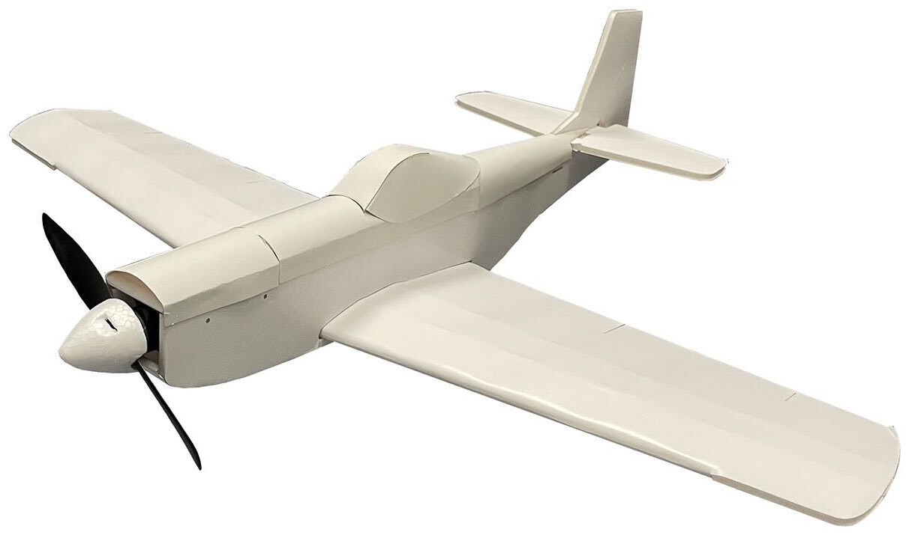
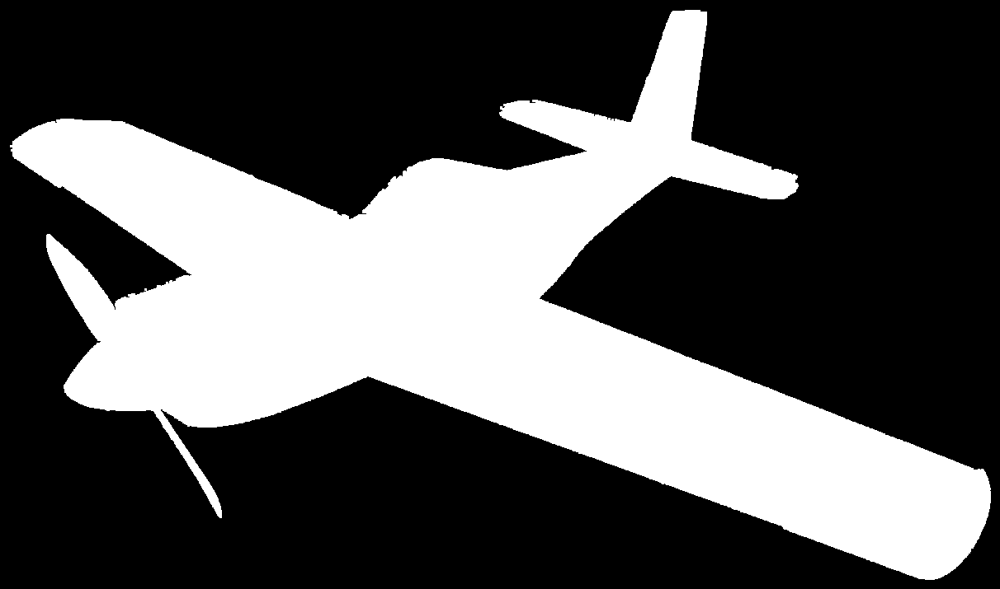
Twenty unknowns
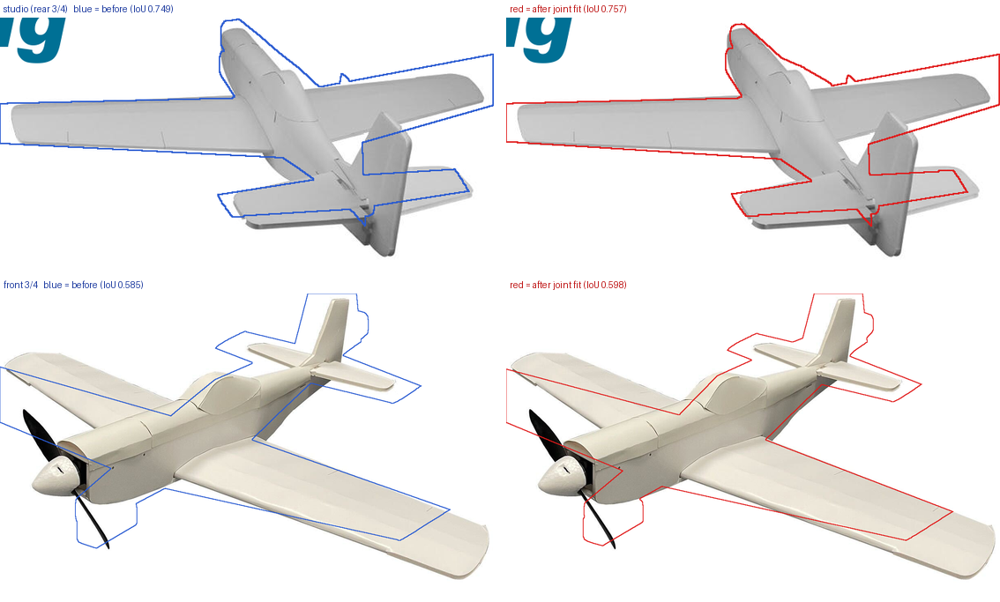
Five unknowns — only what the overlays implicated
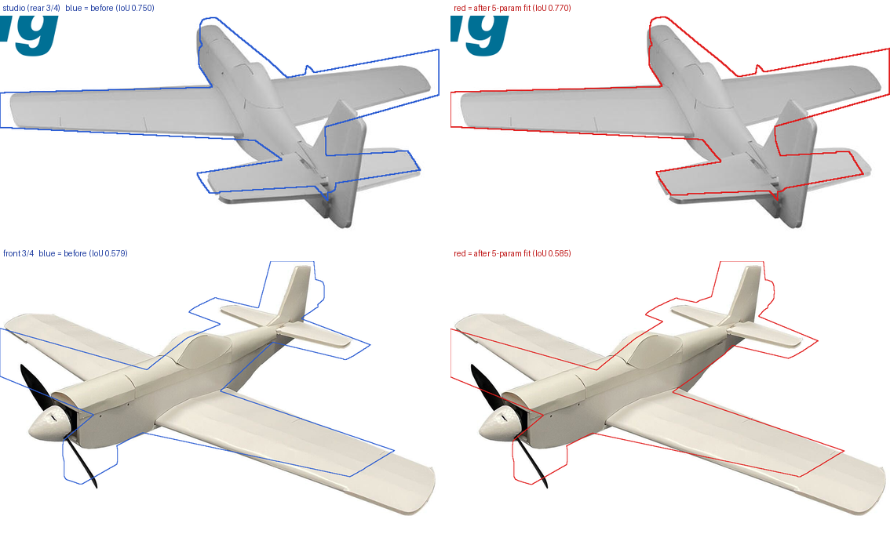
| Run | Free geometry | Chamfer | Studio IoU | Front IoU |
|---|---|---|---|---|
| Everything free | 20 | 3.37 px | 0.749 → 0.757 | 0.585 → 0.598 |
| Implicated only | 5 | 3.41 px | 0.750 → 0.770 | 0.579 → 0.585 |
Five parameters beat twenty. Almost the same chamfer,
but more than double the gain on the view that resolves best
— because with twenty free numbers the optimiser spends its
effort on parameters the photographs cannot see, and one of them
(f_h1) ran into its bound. Fewer, better-chosen unknowns
is the stronger result.
| Parameter | Seed | Fitted | Change |
|---|---|---|---|
| Aft fuselage depth | 45.0 mm | 69.7 mm | +24.7 mm |
| Tailplane root chord | 76.0 mm | 88.7 mm | +12.7 mm |
| Tailplane semi-span | 113.0 mm | 103.2 mm | −9.8 mm |
| Tailplane height | 10.0 mm | 9.5 mm | −0.5 mm |
| Fin height | 118.0 mm | 118.5 mm | +0.5 mm |
The tailplane wants to be shorter in span and deeper in chord — a stubbier stab, which is P-51-ish and not what the model has. Area is roughly preserved, so tail volume barely moves while the surface’s own lift curve slope does.
Two of the four eyeballed findings were wrong. Fin height and tailplane height both moved by half a millimetre: the overlay suggested them, the fit rejected them. That is the argument for fitting rather than looking.
And a caution. The front view gained almost nothing (+0.006) and its outline is still visibly adrift, so these numbers rest largely on one photograph. They are a hypothesis to check against the plan, not a measurement — and both parts are drawn 1:1 there, so checking is cheap.
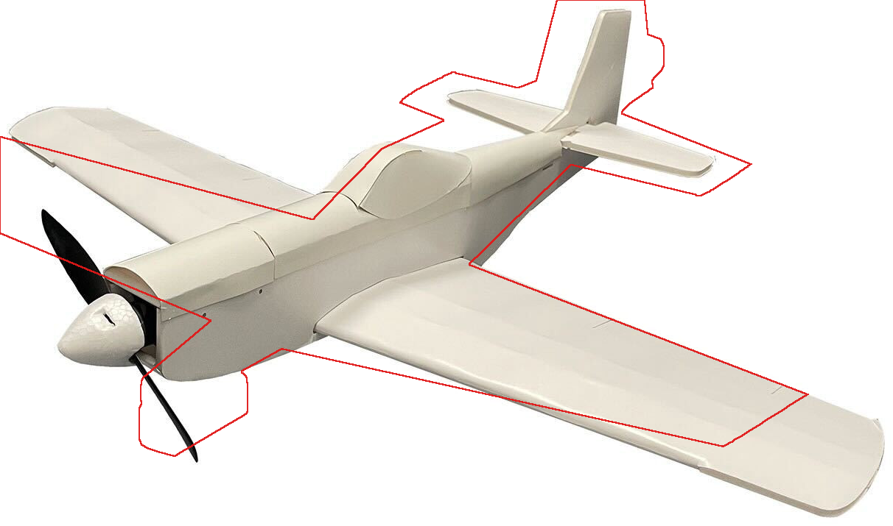
The same five unknowns, judged by overlap instead
Every joint fit above minimised chamfer distance. Running the identical five parameters against overlap instead should be a formality — on pose alone the two objectives agreed to half a degree. With geometry free they do not agree at all.
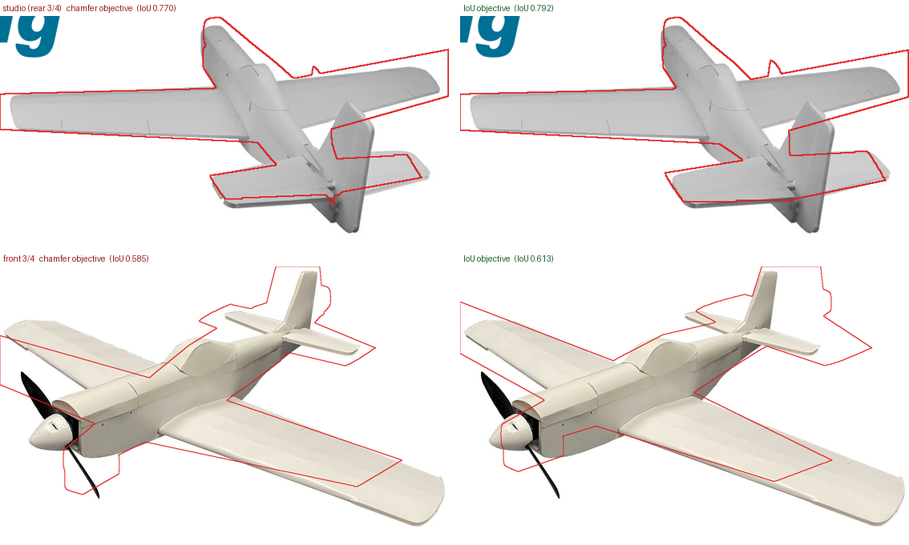
| Parameter | Chamfer | Overlap | Disagreement |
|---|---|---|---|
| Aft fuselage depth | +24.7 mm | −3.0 mm | 27.7 mm |
| Tailplane root chord | +12.7 mm | +33.5 mm | 20.8 mm |
| Tailplane semi-span | −9.8 mm | −6.4 mm | 3.4 mm |
| Fin height | +0.5 mm | +5.1 mm | 4.6 mm |
| Tailplane height | −0.5 mm | +4.7 mm | 5.2 mm |
| Studio IoU reached | 0.770 | 0.792 | — |
| Front IoU reached | 0.585 | 0.613 | — |
The aft fuselage is the scandal. Plus 25 mm against minus 3 mm — same five parameters, same two photographs, opposite conclusions. One is wrong and neither score can say which.
The first reading of this was that overlap had cheated — bought its score by inflating the tailplane chord 44 % to blanket area. That was wrong, and the decomposition says so. IoU counts model pixels outside the subject in its union, so overspill is already penalised:
| Studio view | IoU | Model outside subject | Subject not covered |
|---|---|---|---|
| Seed model | 0.749 | 9,139 px (12.5 %) | 12,297 px (16.1 %) |
| Chamfer fit | 0.769 | 8,822 px (11.9 %) | 10,836 px (14.2 %) |
| Overlap fit | 0.789 | 9,240 px (12.1 %) | 8,771 px (11.5 %) |
Overspill holds flat near 12 % across all three while missed area falls from 16.1 % to 11.5 %. The overlap fit is not bloating the model; it is filling gaps, which is the behaviour one would want. The bigger tailplane chord covers aircraft the model was genuinely missing.
So the disagreement is not one objective misbehaving. They are answering different questions. Overlap asks how much of the subject is accounted for, and will happily trade a slightly worse edge everywhere for a filled gap somewhere. Chamfer asks that every edge sit on its counterpart, and will not. On a five-parameter model that cannot represent the real shape exactly, those two preferences genuinely point different ways — and 28 mm of aft fuselage is how far apart.
Which leaves the honest position: neither number settles it, and the plan draws that part 1:1. Measuring it is minutes of work and is the only thing here that would adjudicate.
Drawing each component separately
A single red outline says the model is wrong somewhere. Drawing each component in its own colour says which part is wrong — and that is the difference between a diagnosis and an impression.
Each wing and fuselage meshes on its own, so each can be rasterised, outlined, and drawn separately. The components are then depth-sorted and a component’s outline is kept only where nothing nearer covers it, which is hidden-line removal: without it the far wing’s trailing edge runs straight through the fuselage and the drawing claims lines no camera could see.
teal main wing · amber tailplane · grey fin · red fuselage · violet power pod. Pose from the plain chamfer fit in both cases.
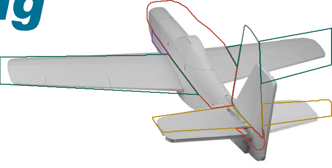
elev 21.1° azim 344.7°. The red fuselage bulges above the real turtle deck and cuts across the canopy. Amber sits low with too short a chord. Violet barely shows, correctly — this angle hides the pod.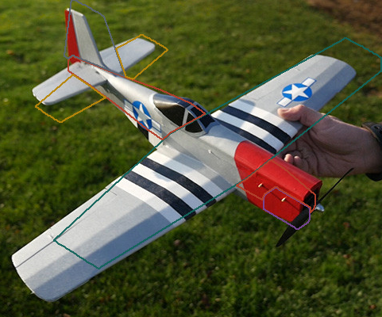
elev 40.2° azim 133.1°. Amber is plainly too large and too far forward, drawn across the fin. Red stops at the cowl where the real fuselage reaches the spinner.Two unrelated angles, the same two faults: fuselage profile wrong, tailplane oversized and mispositioned. Exactly the pair the joint optimiser kept reaching for — now visible rather than inferred.
Should the hidden lines be there?
Removing them is unarguable when fitting — a cost function cannot charge the model for an edge no camera could see. For reading the overlay it is less obvious, so here are both, and a third.
Only 4–5 % of the drawn pixels differ between them, and each has a distinct failure. Keeping every line equally puts the violet power pod up beside the canopy in the studio view — it is slung under the nose and genuinely hidden there, so the drawing invents a fault that does not exist. Removing them fragments each component: the red fuselage breaks into pieces where the wing crosses it, and you can no longer trace it as a shape.
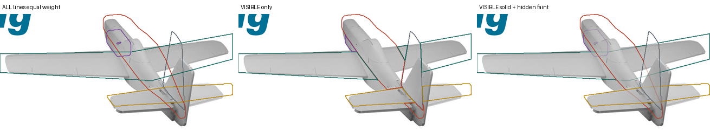
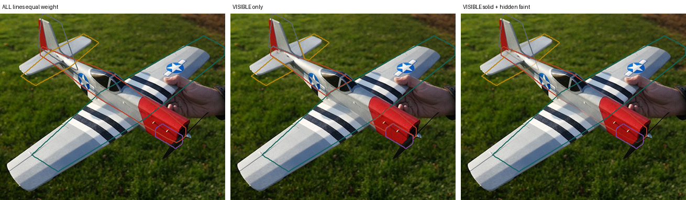
The third wins, and it is not a compromise. Every component can be traced as a whole shape, the hidden portions are legible without competing for attention, and the pod reads correctly as concealed rather than as a box on the turtle deck. That is why engineering drawings have dashed hidden lines, and the reason transfers intact.
So: hidden lines faint for reading, removed entirely for fitting. Different jobs, different drawings — and the fitting code already does the second.
Shading between the borders
An outline has to be traced. A fill is read at a glance — but a fill also covers the thing being compared against, which is what made the solid silhouette useless early on. At 22 % it tints without hiding, and that is already a clear improvement.
The third panel goes further and shades the disagreement rather than the model. Where the model covers aircraft, it is barely tinted — agreement needs no ink. Where it spills onto the background it is tinted hard in its component colour. Where the aircraft is not covered at all, dark grey.
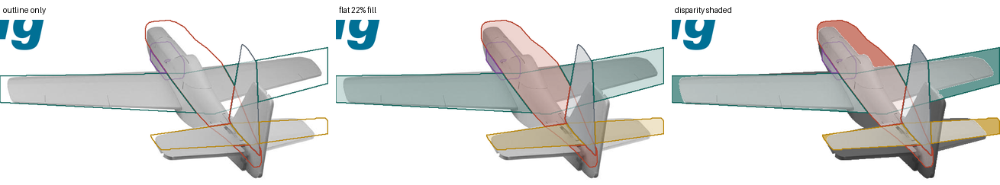
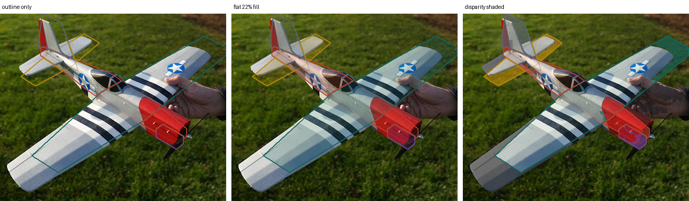
| View | Model on background | Aircraft uncovered |
|---|---|---|
| Studio | 12,729 px | 9,810 px |
| Grass | 10,073 px | 14,838 px |
Disparity shading is the easiest to read, and the easiest to over-read. It cannot separate a wrong model from a wrong pose: tilt the camera a degree and the whole aircraft paints. The outline stays the honest instrument for judging how much is wrong, because a line that is slightly off still looks slightly off.
So use them in that order — disparity shading to find where to look, outline to decide what it means.
Using those interior lines to fit the pose
If the component outlines carry structure a plain silhouette throws away, they ought to pin down the pose better. A silhouette can slide along the aircraft’s long axis almost freely; a wing-root line cannot. So: chamfer as before on the outer boundary, blended with an asymmetric term pulling the model’s interior lines onto the photograph’s edges.
Asymmetric deliberately — every model edge must land near some photograph edge, but a photograph edge with no model counterpart is not penalised. The model has no decals, no invasion stripes and no panel lines, so a symmetric cost would chase paint.
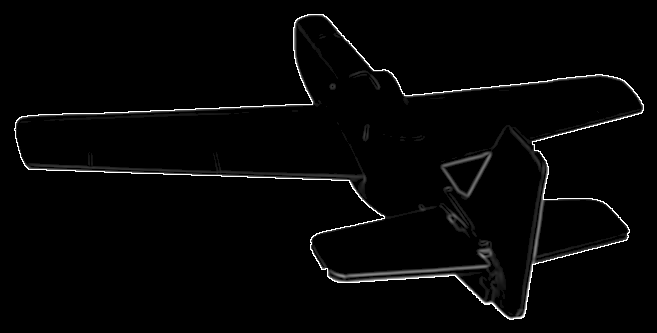
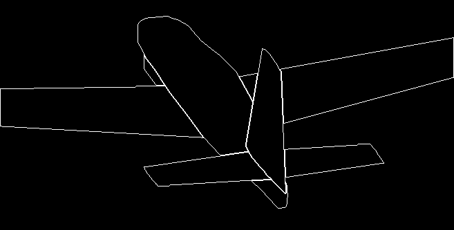
| Interior weight | Studio | Grass |
|---|---|---|
| None — silhouette only | 21.1° / 344.7° — IoU 0.747 | 40.2° / 133.1° — IoU 0.651 |
| Half | 21.9° / 346.1° — IoU 0.749 | 43.3° / 134.2° — IoU 0.623 |
| Three quarters | 15.4° / 329.9° — IoU 0.410 | 36.9° / 27.5° — IoU 0.319 |
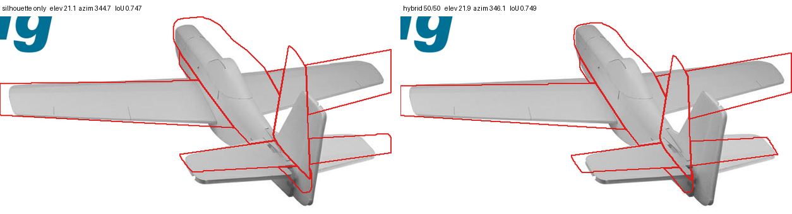
It does not help. Sound idea, correct implementation, and the photographs do not carry the signal it needs. Only 22 % of the studio photograph’s strong edges are interior at all, and of those only a fraction are structural — the rest are shading gradients. On the grass photograph the interior edges are mostly invasion stripes and roundels, which the model can never explain, so the term is worse than useless.
It would earn its place on a subject with real structural contrast — a dark canopy against a light fuselage, a visible wing-root fairing. A white foam aeroplane has none.
The useful part was accidental. Asking why a fit took 156 s found the cost function rasterising all five components for the union and then rasterising them again for the edge map — half the runtime redrawing identical polygons — and a multi-start running full optimisations from all 36 seeds rather than scoring them first. Caching the rasters and screening the seeds: 156 s to 13 s, identical results, across every fit on this page.
Can it run without an agent?
The fitting, entirely.
fit_silhouette(pts, faces, target) takes no human input:
no landmarks, no angle to guess, no starting pose. That half is a
library function.
The segmentation, not reliably. The mask that made the fit above work came from a colour rule written after looking at the photograph — which is the agentic step. Replacing it with a generic rule that seeds the background from the frame border recovered about half the aircraft on this photograph and essentially nothing on a second one with a house and sky in the frame.

So the condition is on the input, not the method — and the section above demonstrates it: on a white ground the threshold was enough, both fits agreed to half a degree, and nothing in the pipeline needed a human. On grass with a hand in frame, the hand ends up inside the mask being fitted to, and some of that 0.694 is the model dutifully trying to cover a thumb.
What it found
| Difference | Consequence | Matters |
|---|---|---|
| Horizontal stab larger, further forward | Changes tail volume, and therefore static margin | aerodynamic |
| Fuselage too slender and tubular | Under-predicts body drag and side area | aerodynamic |
| Canopy smoothed into the loft | Plan has separate turtle decks and a canopy part | shape |
| Wing root chord looks deep | May be real, may be perspective — needs the plan | shape |
| No spinner or propeller | None — not modelled, and correctly so | cosmetic |
The stabiliser is the one worth chasing. Everything else is either a refinement or a question the plan can answer directly.
How the angle was matched
Rendering at an arbitrary viewpoint is three lines —
ax.view_init(elev, azim) after passing your own axes to
airplane.draw(ax=…). Four candidates were enough to
find the photograph’s viewpoint by eye.

elev=40, azim=140, lower left, matches the photograph.
The model as it stands

shape 2.5 → 4.0) and adding the power pod, plan part 00, which existed only as a 6 g mass entry.Worth keeping
The side-by-side, for a quick look; and fit_chamfer when
a number is wanted. Together they need no landmarks and no guessed
angle — only a photograph whose subject separates from its
background.
Worth care
Any residual produced by a pose that was fitted to it. Check the overlay before the table — the landmark fit scored 21 px and was visibly wrong, and nothing in the number said so.
What did not work
- Automatic angle matching by silhouette IoU. Normalising each mask to a square destroyed aspect ratio, so a long thin planform and a compact one scored identically — IoU came back flat across the whole grid. Fixed, and it still returned identical pixel counts for different angles. Four candidates judged by eye took one attempt.
- Two thresholding bugs, both from assuming white. AeroSandbox’s background pane is lavender, about 698 on a 765 scale, so “not white” caught the entire axes rectangle. The robust version takes the modal colour as the background.
- Orthographic fitting failed on a close photograph. Residuals sat at 65 px on a 480 px span — 13% — because the near wingtip genuinely is larger than the far one and no rigid orthographic pose can place both. Adding one perspective parameter took the mean to 21 px. The camera model was never at fault: it reproduces matplotlib to 0.00 px.
-
Rendering then rescaling kept going wrong. Two
attempts put the outline up, left and half-size —
bbox_inches="tight"crops the canvas, so matplotlib’s reported pixel coordinates stop matching the saved file. Projecting the mesh straight into photograph pixels removed the whole class of bug. - Segmentation depends entirely on the photograph. Uniform grass segmented cleanly. A second photograph with a house, sky and driveway in it returned the background instead of the aeroplane.